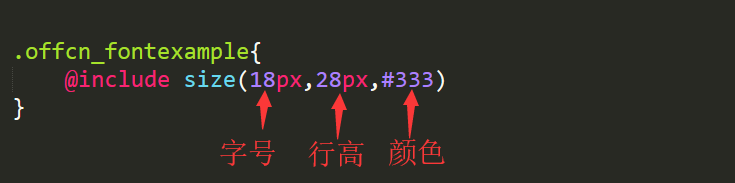

OFFCN系统通用样式参考库
- 1.所有的类名前缀都是带"offcn_"
- 2.引入的覆盖样式的顺序必须在element的css文件后面
- 3.使用时直接粘贴类名即可使用
- 4.目前使用的是element的2.11.0版本
- 5.直接在index.html中引入index.css
- 1.默认字体是"Microsoft YaHei"，字号是13px，行高24px，颜色是333
- 2.自定义字体样式请按照如下操作：
- 定义类名后使用@include引入size(params0,params1,params2)
- params0:字号，params1:行高，params2:颜色。如下图所示：
- 
- 1.默认字体是"Microsoft YaHei"，字号是13px，行高24px，颜色是333
- 2.自定义字体样式请按照如下操作：
- 定义类名后使用@include引入size(params0,params1,params2)
- params0:字号，params1:行高，params2:颜色。如下图所示：